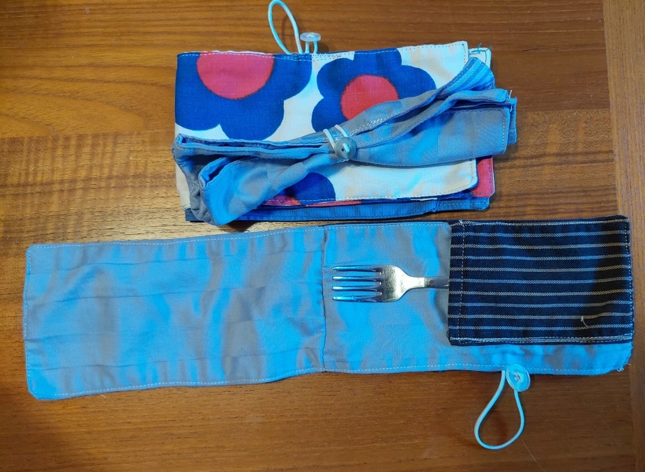

Meet Napkind! Move beyond disposable utensils and napkins with a first-of-its-kind travel pouch that enables you to bring your own
utensils wherenver you go. Made of stylish upcycled fabric, Napkind is easy to throw in your bag - and the wash - and its slim profile
holds your utensils tight. Each is handmade with love in Wayne, Pennsylvania.